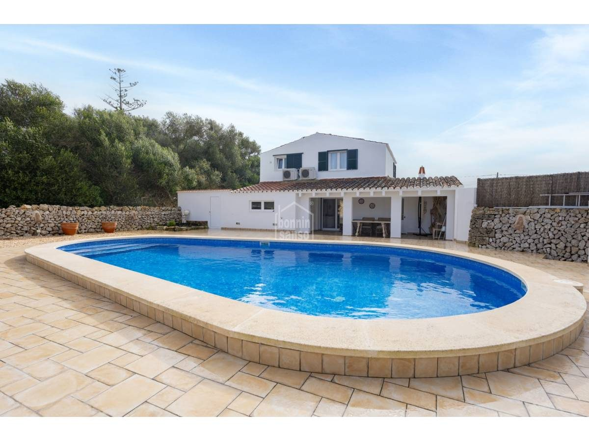
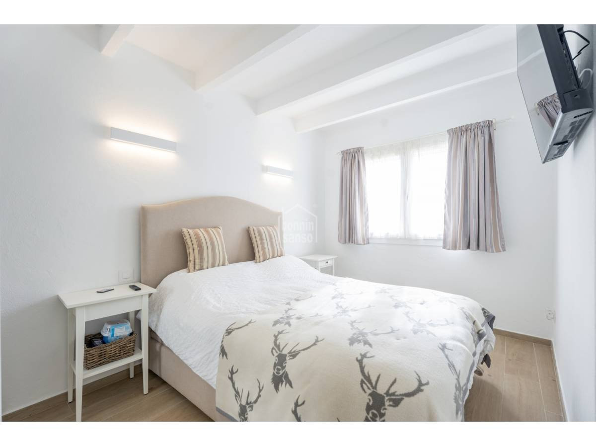
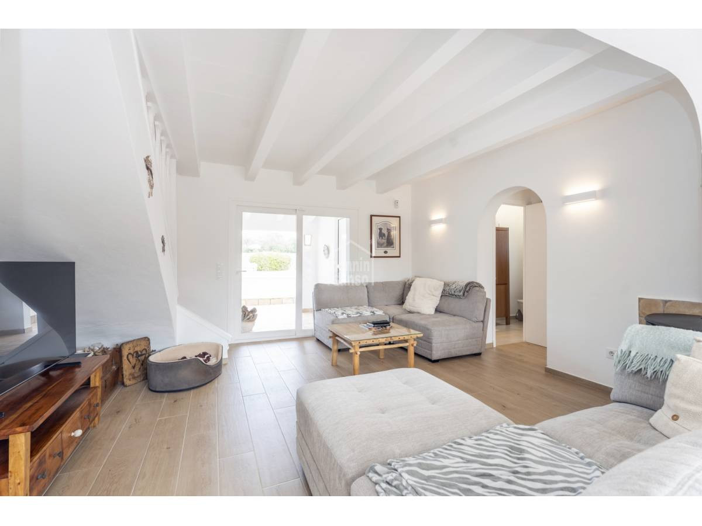
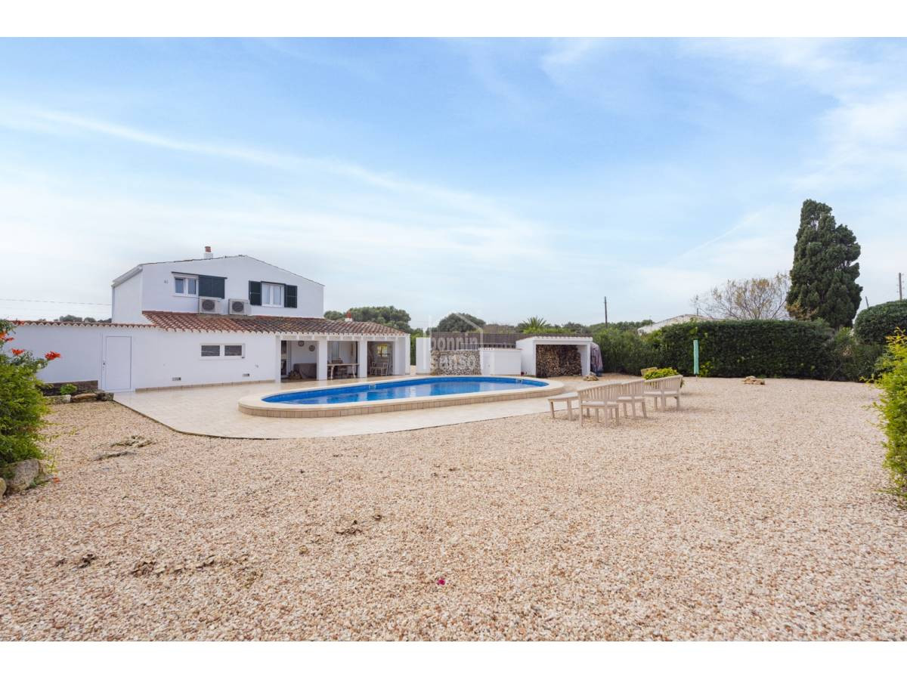
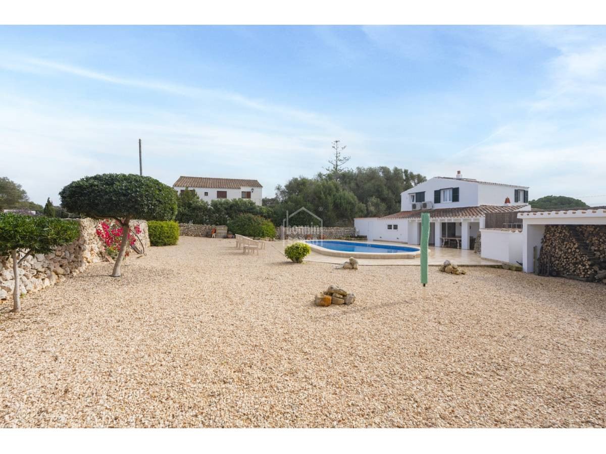
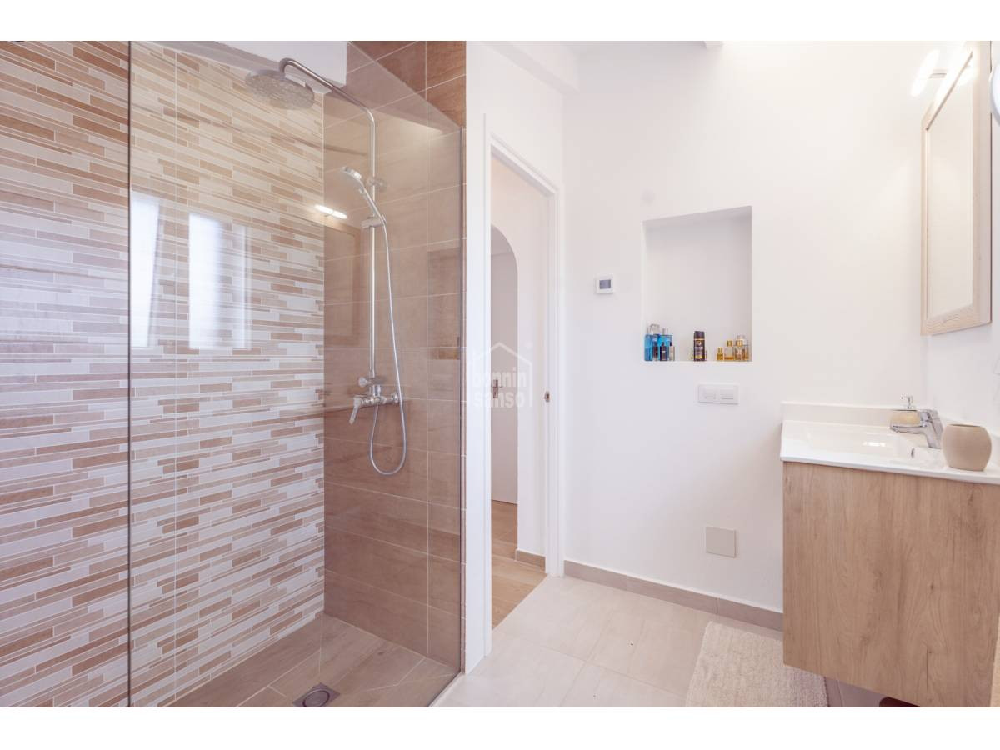

€990.000
Biniparrell, Sant Lluís, Menorca
Charming traditional Menorca with modern comforts: cast-iron fireplace, A/C throughout, porch overlooking a built private pool — not a fixer.
Shared well water (typical rural Menorca). Two floors: 1 bed down, 2 up. Live at €990.000.




